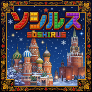

ふつうのパズルとぜんぶ逆！？
「意地悪ブロック」で天才CPUを阻止れ！
『ソシルス』は、ブロックを消すゲーム…ではなく、あなたが変なカタチのブロックを作って送りつけ、頭がよすぎる「天才CPU」にラインを消させないようにジャマ（阻止）するあたらしいパズルバトルです！
2つのゲームモードと しょうぶのルール
ひたすらソシる
ずーっとジャマする側になって遊ぶモード！意地悪なブロックを作って、天才CPUをどんどん追いこもう。はじめて遊ぶときはまずコレがおすすめ！
ソシりソシられ
敵はCPUか、さっきの自分か!?
①「阻止るフェーズ」でCPUをたおすと、②「因果応報フェーズ」がスタート！
さっき自分がCPUに送った意地悪ブロックが、こんどは自分に向かって降ってくるぞ！
- 阻止るフェーズ：CPUのブロックを赤い点線（上限ライン）より上に積み上げさせたら勝ち！
- 因果応報フェーズ：規定ライン消去・4段同時消し、または上限を超えたときにさっきのCPUより多く消していれば突破！

- CPUに規定ライン（STG1は10段、ステージが1上がるごとに+1段）消される
- またはCPUに4段同時消し（テ◯リス）を決められる
STG1は5段、STG2は6段…と少しずつ高くなるよ。
STG1は10段、STG2は11段、STG3は12段と増えるよ。
前のステージ終了時の「上限ラインの (新STG−2)段下から上」にあるブロックが、新ステージの一番下から積まれた状態でスタート！
がめんのみかた（じっさいのプレイ画面）
-
1
ステータスバー：今のステージ・上限の段数・CPUが何段消したか・スコアが見られるよ。右のボタンでランキング🏆・音ON/OFF🔊・メニューが開けるよ。
-
2
赤い点線（上限ライン）：ここより上にブロックがはみ出したら勝負あり！あと1〜2段までせまるとピカピカ光って教えてくれるよ。
-
3
NEXT（つぎのブロック）：きみが作って送ったブロックがここに入るよ。「ソシりソシられ」では、この下に因果キューも表示されるよ。
-
4
天才CPUのかお：余裕のときはサングラス😎、ピンチになると大汗🥵！表情を見ながら攻めよう！
-
5
5つのひっさつわざ：右の大きな数字が「のこり回数」。ピンチや大チャンスのときにタップして使おう！
-
6
ブロック作成マス（ビルダー）：2×4の正方形マスを指でタップ＆なぞって、CPUに送るブロックを作る場所だよ。上のバーは制限時間！
-
7
決定！ボタン：ブロックができたらおしてNEXTへ送ろう！（PCならEnterキーでもOK）
ブロックのつくりかた ＆ 3つのちゅうい点
ブロックは上下左右の辺でつながっていないとダメ！もしバラバラ（ななめだけ）になっていると、黄色くなった小さいパーツしか送られず、×のパーツは消えてしまうよ。
マスの中にある爆弾にさわると、作っていたブロックがぜんぶ消えて-100点！CPUが4段消すたびに爆弾が1個ふえるよ（最大4個）。
時間切れになると-200点になり、さらにCPUが一番よろこぶ「1×4のピンクのぼう」をプレゼントしてしまうよ！
※ わざと離して塗ったり、💣にさわって動きをたしかめてみよう！
自分でうごかすときのコントローラー操作
「因果応報フェーズ」や、必殺技「ペレストロイカ」「パーミャトニク」を使うと、画面の下がコントローラーに変わるよ！
押しやすい！
ロシアの名がつく！5つのひっさつわざ大図鑑
必殺技は阻止るフェーズでも因果応報フェーズでも使えるよ！（※スペツナズだけ阻止る専用）
ボリショイ
阻止る時：マスが3×4に巨大化＋爆弾0＋時間一時停止！できたブロックはきれいな虹色になるよ！
因果応報時：3×4で自分好みのブロックを作って、NEXTに強制わりこみできる！
ペレストロイカ
阻止る時：おした瞬間にCPUから操作権をうばい、今あるブロックを自分でジャマな場所へ落とせる！
因果応報時：2×4で自分好みのブロックを作って、NEXTに強制わりこみ！
スペツナズ
増えすぎた爆弾（2個以上のとき）を90%の確率で1個まで除去してくれる！ただし10%の確率でド派手に失敗して半減だけになることも…！（※阻止るフェーズ専用）
パーミャトニク
ぜったいに消せない輝く銀色1マスブロックを好きな位置に落とせる！ステージが進んでも同じ場所に残り続けるが、4ステージ目の開始時に盗賊がぬすみに来るぞ！
スネスチー
盤面にある「パーミャトニク」をすべてまとめて消し去るワザ！因果応報フェーズで自分の記念碑がジャマになったときなどに大活躍！ロシアクイズに正解してゲットしよう！
毎ステージクリア後のおたのしみ「ロシアクイズ」
ステージをクリアするたびに、ロシアの歴史・宇宙・音楽・グルメなどの3択クイズが出題されるよ！ 見事せいかいすると…
天才CPUに勝つための「ソシルス」6つのヒミツ！
これを覚えれば、きみもランキング上位をねらえるマスターだ！
天才CPUが一番ニガテなのは、ブロックの下にできる「すきま（あな）」と「ガタガタの高さ」！ 四角やまっすぐな棒ばかり送るとカンタンに消されてしまうので、階段型（S/Z）やコの字、T字、6〜7マスの大きな変なカタチをまぜて送ろう！
CPUが4段同時消しをねらっているとき、時間切れで「1×4のピンクのぼう」を送ってしまうと一発で負けになってしまう！ あせったときほど、小さくてもいいから時間内に「決定！」をおして棒を送らないようにしよう。
銀色の記念碑がある行はぜったいに消えない！だから一番下（1段目）に1個おくだけで、CPUが使える高さがずっと1段ぶんせまくなる超強力なワザだぞ！ ただし4ステージ目の盗賊と、因果応報で自分のジャマにもなる点には気をつけよう。
せっかくあいた穴をCPUがうまく埋めそうな瞬間にペレストロイカを発動！ あえて横向きにして穴の真上にフタをするようにドスンと落とすと、天才CPUでも一気に積み上がってしまうぞ！
「ソシりソシられ」で自分が消す側になったとき、どうにもならないピンチが来たらボリショイかペレストロイカを使おう！ すきまにピッタリの「1×4の棒」や「1×1の1マス」を自分で作ってNEXTにわりこませれば、一気に大逆転できるぞ！
制限時間ありモードは得点倍率が ×1.5〜×2.5になるうえ、残り時間が多く残るほど毎回クイックボーナスがもらえるよ！ さらに少ない手数でCPUをたおすほど速攻ボーナスもアップ！